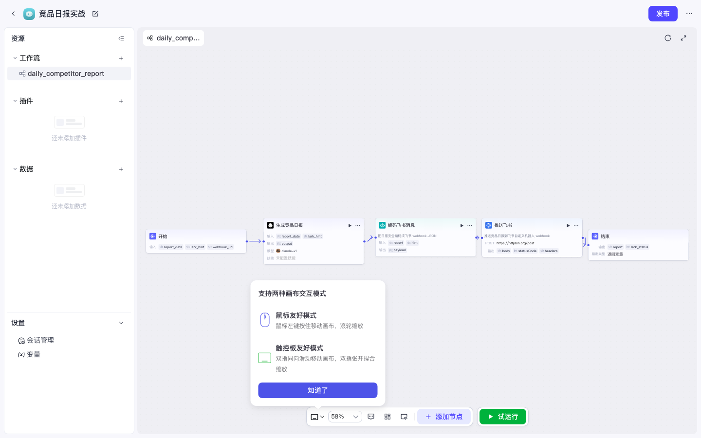

Coze 实战 · P07 / 共 10 课 · ≈30 min · 开源部分可用
P07 · 应用 IDE 与资源组织
上级：实战总目录。文件命名规范：coze-studio-practice-NN-slug.html。
0
前置
为什么要学应用：智能体擅长对话；应用（Project）擅长把工作流 / 插件 / 数据收成一个可发布单元。P01 的竞品日报就是在应用里搭的。
- □ 已完成 P00；建议做过 P01（可直接打开已有应用复习）
1
创建应用（若还没有）
- 项目开发 → 右上角 + 创建
- 选右侧 创建应用（不是智能体）→ 创建
- 名称例如：
竞品日报实战→ 进入 /project-ide/:id

图：创建弹窗 — 本课选「应用」。
2
认清应用 IDE 布局
- 左侧：资源树（工作流、插件、知识、数据库等）
- 中间：当前资源编辑区（工作流画布 / 欢迎页）
- 顶部：发布、设置等入口

图：应用 IDE 欢迎页 / 资源栏。
3
在应用内新建工作流
- 左侧资源 → 工作流 → 新建
- 名称规则：仅字母数字下划线（如
daily_competitor_report），中文名会报错 - 进入画布后按 P01 编排，或先放「开始 → 结束」练手

图：应用内打开工作流画布。

图：P01 完整五节点画布（复习用）。
踩坑：工作流名称用中文创建失败或无法保存。一律用
snake_case 英文。4
组织其它资源
| 资源 | 建议 |
|---|---|
| 插件 | 应用内引用，供工作流插件节点使用 |
| 知识 / 数据库 | 与空间资源库共享；在应用内关联 |
| 多工作流 | 按职责拆：日报推送 / 入库 / 告警 |
5
和智能体怎么分工
| 场景 | 用什么 |
|---|---|
| 临时追问、多轮分析 | 智能体（P02） |
| 定时推群、固定流水线 | 应用 + 工作流 + 外部 cron（P01/P08） |
| 对话里顺手跑流水线 | Agent 挂载工作流（P03） |
6
验收清单
- □ 能进入 /project-ide/:id
- □ 左侧能看到并打开至少一个工作流
- □ 知道应用发布渠道主要是 API / Chat SDK（下一课展开）
通过 → 下一课 P08 发布 · PAT · OpenAPI。